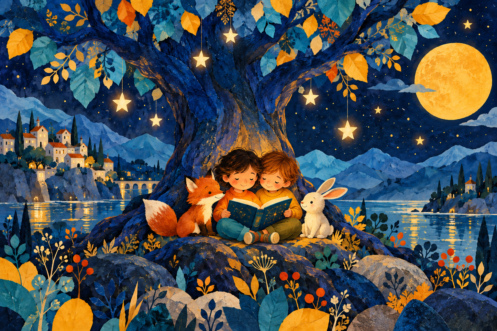

Un cuento, un momento juntos
Historias para abrir la imaginación.
Elige un cuento, acércate un poquito y deja que la lectura haga el resto.

¿Qué leemos hoy?
Historias cortas para disfrutar a vuestro ritmo.
Un rincón para leer con calma
Los relatos están pensados para compartir en familia. Las historias bíblicas se presentan como relatos de tradición cristiana.